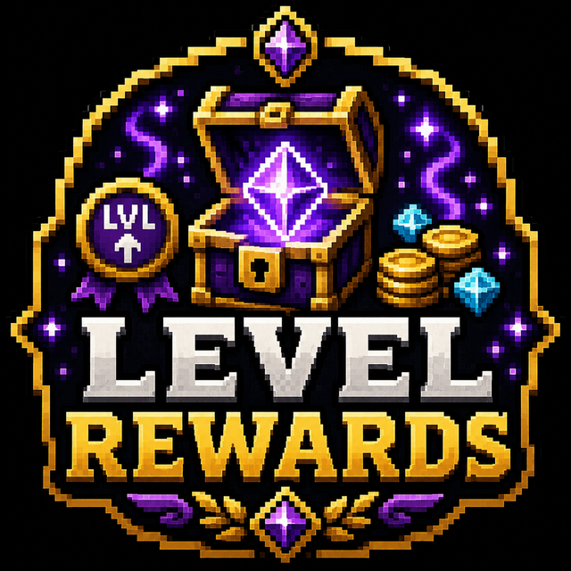

✓
Vanilla level milestones
Use the experience bar players already understand.

Reward players for reaching vanilla experience levels.
Full overview
LevelRewards converts vanilla experience levels into a lightweight milestone track. Server owners can recognise players for levelling without introducing a separate skill or class system.
Rewards are delivered when configured thresholds are reached, making ordinary mining, combat and enchanting contribute to an additional sense of progression.
How it works
The plugin watches player experience levels and compares them with configured milestones. Reaching an eligible level triggers the associated reward action.
Because the system uses existing Minecraft levels, players do not need to learn a new interface or currency.
Administration
Milestone spacing and reward value should account for level loss, XP farms and any plugins that modify experience gain. As a legacy resource, verify duplicate-reward protection and compatibility before production use.
Feature breakdown
Each headline feature is expanded below so visitors can understand the real server use rather than seeing a short tag list.
Use the experience bar players already understand.
Choose what each important level should grant.
Normal gameplay naturally moves players toward the next target.
Connect milestones to economy, items, permissions or announcements.
No large profile or skill database is required.
Define levels, test rewards and begin using the track.
Getting started
The platform buttons include downloads, changelogs and the original public resource discussion.
Test legacy compatibility and reward repetition behaviour.
Define milestone levels and commands.
Balance rewards around the server's XP rate.
Verify behaviour after death, enchanting and administrative level changes.
Community feedback
Live ratings and recent written reviews from the public Spigot resource page.
Review data is loaded through Spiget. Static rating fallbacks remain visible if the service is unavailable.
Related projects
Survival Utility
Crystal-themed healing tools for survival gameplay.
Custom Items
A clean foundation for collectible crystal items and server rewards.
Recipe Utility
Make chainmail armour craftable again.